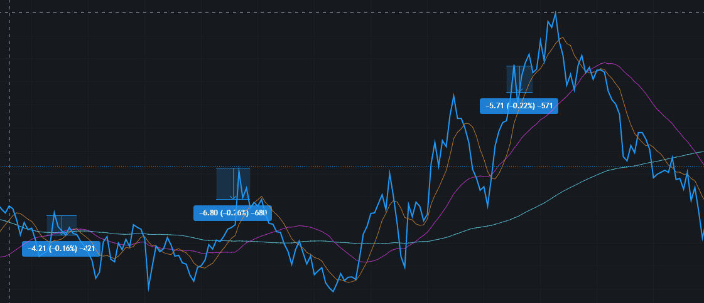

6个月以上实盘测试
| 货币： | 升跌幅： | 最高价： | 最低价： | 价格： |
|---|---|---|---|---|
| {{mtick['symbol']}} | {{mtick['priceChangePercent'] }}% | {{mtick['highPrice']}} | {{mtick['lowPrice']}} | {{mtick['lastPrice']}} |
基本原理
预测目标的选择
“波动”是市场存在的首要元素，没有波动的市场是无法长久存在的。在有限的资源下，进行趋势的判断非常困难。那么怎么能在控制风险的情况下能进行盈利？ 进行一定的预测是唯一的方法。
预测的准则是：在相同的资源下预测的准确性和变化量成反比。也就是变化越小，时间越短，预测越容易。所有的价格市场变化的波动曲线都类似下图：
根据原则，对变化幅度小，变化时间短进行预测，如图中三个区域，在很短的时间内出现比较小的价格波动。
这就要求高频率跟踪价格变化，并迅速进行交易。采用计算机自动进行是最好的方法
历史数据的分析
计算机AI的学习系统，可以对大量的历史数据进行分析，并随着新数据的加入而不断实时调整预测模型的系数
分析的维度包括交易量，价格幅度，单位变化等等，并需要剔除重大外界因素的影响。
策略的使用
对AI建立的模型分析后的结果，进行各种交易策略的结合和优化。尽可能的降低风险，稳定获取利润。